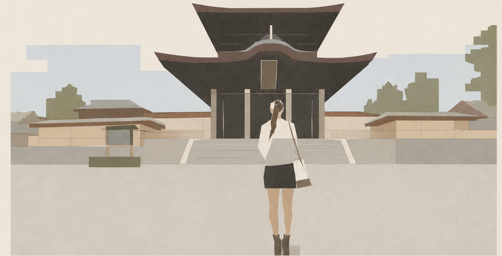
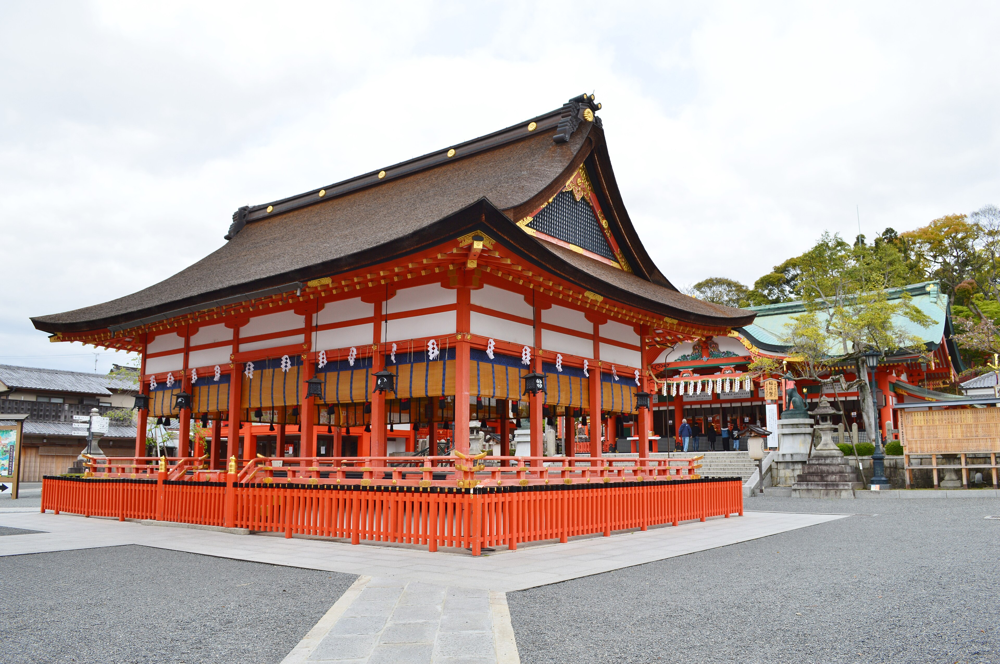
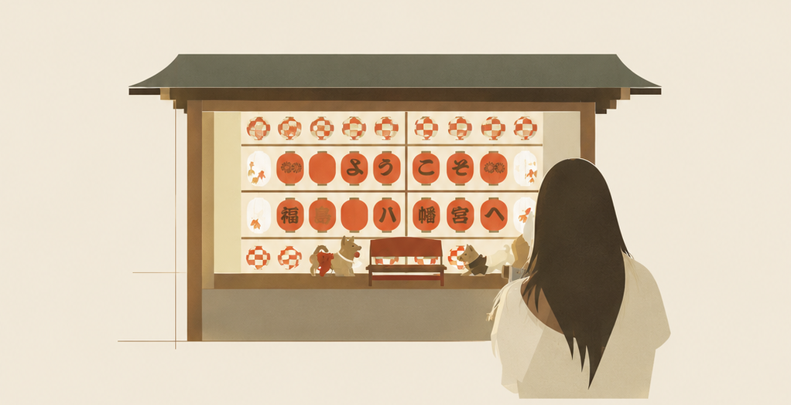
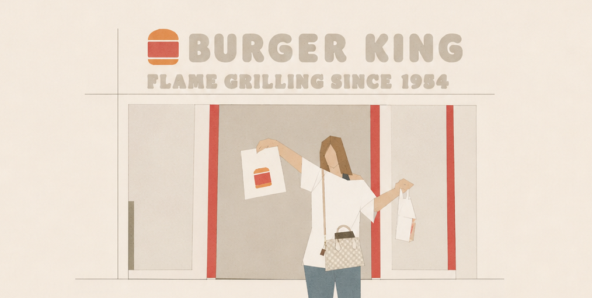
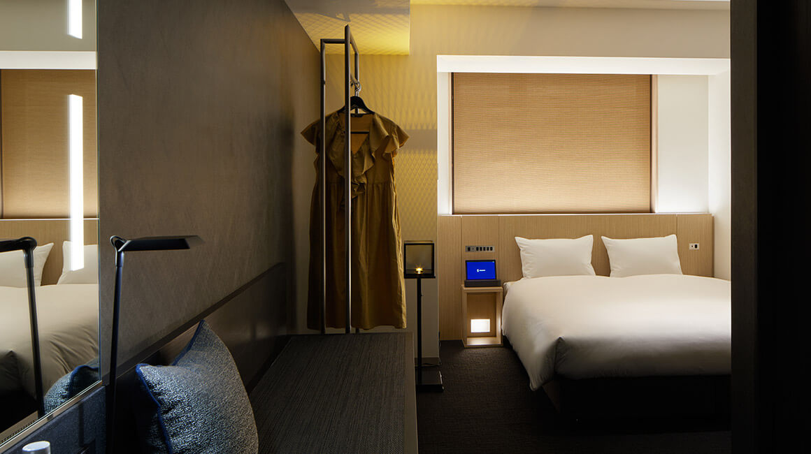

今回の旅
- 日程
- 2026年9月5日(土) - 9月7日(月)
- 泊数
- 2泊3日
- 行き先
- 京都 / ユニバーサル・スタジオ・ジャパン
- テーマ
- 決めすぎず、可愛く、楽しく、誕生日らしく。
Sayaka's Birthday Passport
かわいいも、おいしいも、楽しいも、ぜんぶ連れていく2泊3日。
Index
迷わないように、必要なことだけページごとにまとめました。
Overview
3日間の流れを1枚で確認できるページ。当日、迷ったらここを見る。

Before This Trip前にもこうして、二人でどこかへ出かけた。今回もきっと、同じくらい楽しい。
Route & Tickets
時間が決まっている移動だけ、ここで確認。
9/5(土) 福岡 07:25 → 関空 第2ターミナル 08:40
9/5(土) 関西空港 09:41 → 京都 11:04
9/6(日) 15:00から / 9/7(月) 開園から入場
9/7(月) USJ 15:40 → 関空 第2ターミナル 17:01
9/7(月) 関空 第2ターミナル 18:50 → 福岡 20:10
搭乗手続き、手荷物、USJ営業時間、バス乗り場。
Day 1 / Kyoto
Peach MM152。朝は時間に余裕を持つ。
到着後、関西空港駅へ移動。
関西空港駅から京都駅へ。到着予定は11:04。
京都駅からsequence KYOTO GOJOへ向かい、荷物を預ける。
予約時間に合わせてお店へ。着付け後はそのまま京都散策へ。
清水寺・産寧坂方面と伏見稲荷大社を中心に、写真を撮りながら巡る。
返却時間に合わせて、無理なく過ごす。
清水寺と伏見稲荷をメインに。歩きすぎない。かわいい写真は逃さない。
Kimono Walk
sequence KYOTO GOJOに荷物を預けたあと、11:45から梨花和服 京都駅前店で着付け。

清水寺・産寧坂 / 伏見稲荷大社。余力があれば祇園・鴨川方面へ。

Before This Trip夜の参道を、提灯を見上げながら歩いた日。あの夜みたいに、京都の夜を歩く。
Food Notes
気になっているジャンルを先に書き出しておくページ。お店は当日決めても大丈夫。

Before This Tripこういう気取らない一食も、旅の醍醐味。
Day 2 / Kyoto to USJ
清水寺・産寧坂方面など。USJに備えて短めに。
荷物を回収して京都駅方面へ。
京都駅周辺かホテル近くで軽めに。
京都駅から大阪・西九条方面を経由。
荷物を預けて、USJ入場準備。
夕方から夜のパークを楽しむ。
混み具合と気分で決める。
ホテルはUSJ徒歩圏。
京都からUSJは乗り換えがあるので、荷物は少なめにまとめる。
ライトアップ、ショップ、シティウォークのごはん。
Day 3 / USJ
ホテルまたは駅周辺で身軽にする。
1.5デイ2日目は開園から入場。
帰りの荷物を考えながら買い物。
15:40発に間に合うよう早めに動く。
USJから関空第2ターミナルへ直行。
搭乗手続きと休憩。
関空 第2ターミナル発。
2泊3日の旅が終了。
Stay
荷物を預ける場所と、戻る場所をここで確認。

京都・五条エリア。1日目は荷物を預けて着物レンタルへ。
USJ徒歩圏。2日目は荷物を預けて15:00からパークへ。
Weather & Packing
前日に天気を確認して記入。そのあとチェックを入れながら準備。
Just In Case
出発前に空欄を埋めておくと安心なページ。
Budget Notes
使った金額をその場で書き込むページ。あとで見返すと面白い。
Memory Notes
あとで見返すためのページ。行きたい場所や買いたいものを書き足せます。
Before This Trip思い出はいつも、こうしてひとつずつ増えていく。